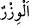

25. Kıyâmet gününde kendi günahlarını tam olarak taşımaları ve bilgisizce
saptırmakta oldukları kimselerin günahlarından da bir kısmını yüklenmeleri için
(öyle derler). Bak ne kötü şey yükleniyorlar!
“Kıyâmet gününde kendi günahlarını tam olarak taşımaları” çünkü onlar bu sözü,
başkalarının günahlarını yüklenmek maksadıyla söylememişlerdi. Ancak ıdlâl
(saptırma) bu sözlerinin bir sonucu ve ürünü olunca, fâilin fiilini yapma maksadına
benzetilmiştir. Nitekim Bahru’l-ulûm’da böyle denilmektedir.
el-İrşâd’da der ki: Onlar bu sözü, özel olarak onların günahlarını taşımak için
söylemişlerdir. Bu da onların sapıtma günahlarıdır. Bu bakımdan onların günahlarını
yüklenmiş olmaları kesinlik kazanmış olur.
“
el-Evzâr”, ‘
el-vizr’in çoğuludur. Ağırlık ve ağır bir yük mânâsına gelir.
“Günahlarını tam olarak taşımaları”ndan maksad, dünyâda başlarına gelen herhangi
bir musîbet sebebiyle mü’minlerin günahlarının bağışlandığı gibi onların günahlarının
bağışlanmamasıdır. Beş vakit namaz, Ramazan orucu, hac ibâdeti arada geçen
günahların affına sebep olduğu gibi başa gelen musîbet, şiddet, sıkıntı, ağrı, keder,
kuraklık, hatta bir diken batması ve ayak sürçmesi gibi insana üzüntü veren şeyler bile
mü’min için birer keffâret sebebi olmaktadır.
“Ve bilgisizce saptırmakta oldukları kimselerin günahlarından da bir kısmını
yüklenmeleri için (öyle derler)” yâni kendilerinin saptırmasıyla yoldan çıkanların
günahlarının bir kısmını yükleneceklerdir. Bu da saptırma ve sapmaya sebep olma
günahıdır. İkisi de bu konuda ortaktırlar. Çünkü biri saptırır, diğeri de ona uyar.
Dolayısıyla ikisi de günahı yüklenirler. Bir hadiste şöyle buyrulmuştur: “Kim kötü bir
çığır açarsa, onun günahı ve kıyâmete kadar onunla amel edenlerin günahı ona
verilir.” [141]
Mesnevî’de der ki:
Yiğidim; kim bir kötü çığır açarsa,
Halk da ondan sonra bu kötü çığıra körlüğünden düşerse,
Bütün bu kötülüğü işleyenlerin günahı, o yolu açana da yazılır
Çünkü o baştır, öbürleri kuyruk!
“Bilgisizce” dâvet ettikleri yolun dalâlet yolu olduğunu ve bunun karşılığında şiddetli
bir azâba müstahak olacaklarını bilmeksizin veya onların dalâlette olduklarını bilmeyen
kimseleri saptırırlar, demektir. “Bilgisizce” kaydının faydası, onların bu aldatmalarının
akıl sâhipleri yanında revaç bulmadığını, onlara ancak akılsızların ve câhillerin tabî
olduğunu bildirmek içindir. Yine burada onların bu bilgisizliklerinin kendileri için
geçerli bir özür olmadığına da tenbih vardır. Çünkü onların araştırıp inceleyerek
gerçekten hak üzere olana tâbi olarak onu bâtıl üzere olandan ayırmaları gerekirdi.
Gözünü aç, kulağını aç, önünde tuzak